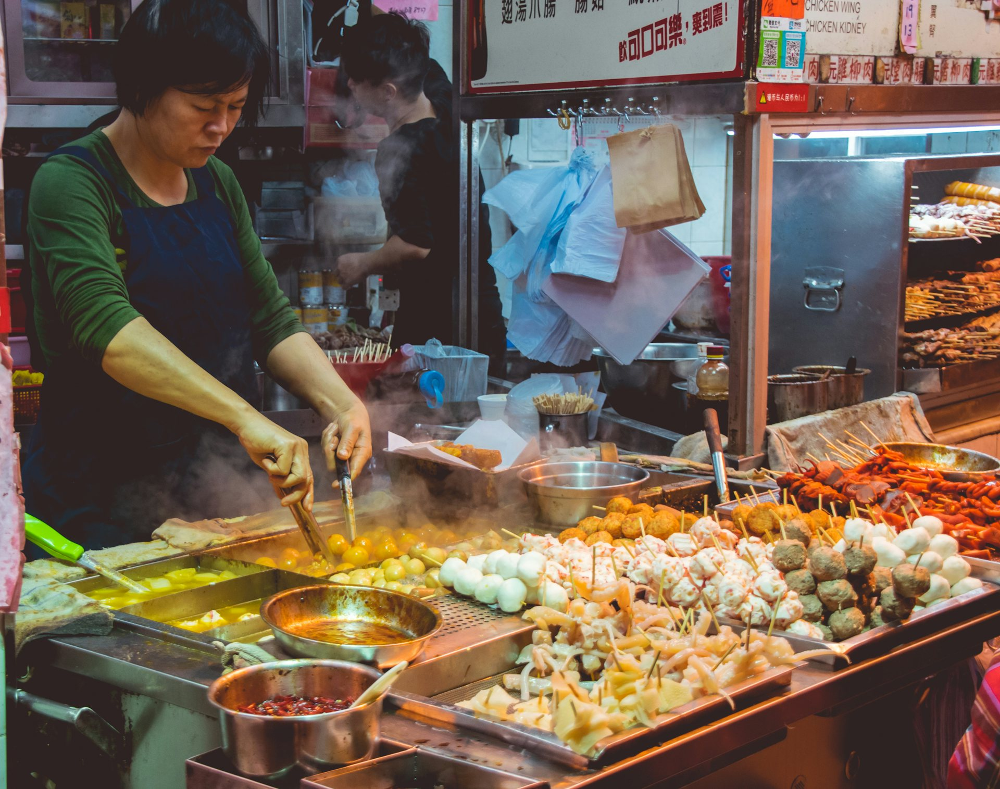
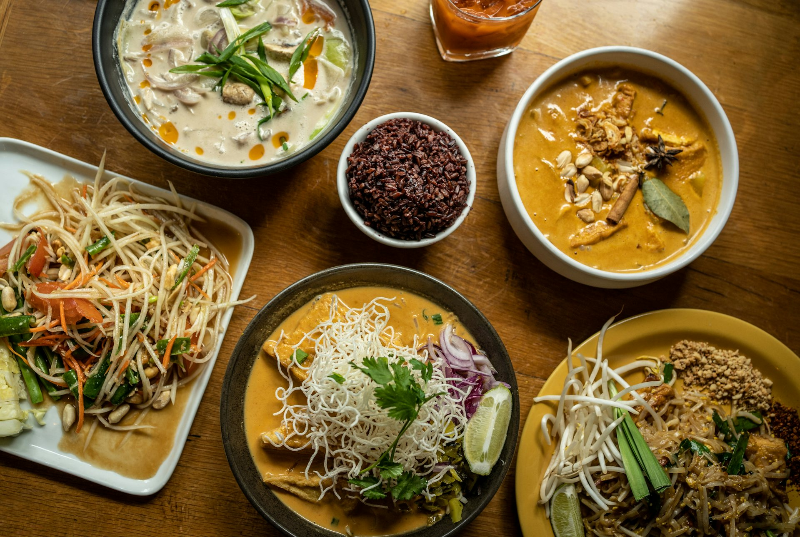

[รูปผู้ก่อตั้ง]
[ชื่อ Mat]
ทำคอนเทนต์มากว่า 10 ปี มีผู้ติดตามรวมราว 2 ล้านคน และมีบริษัทของตัวเองที่ทำงานกับแบรนด์ใหญ่มาตลอดสิบปี [เติม: เรื่องที่เกี่ยวกับอาหาร/ร้านอาหาร 1–2 ประโยค]

About us
Flavolution เริ่มจากเพื่อนสองคนที่ทำคอนเทนต์มากว่า 10 ปี เราเห็นร้านดีๆ เงียบหายไปเยอะเกินกว่าที่ควร ไม่ใช่เพราะไม่อร่อย แต่เพราะไม่มีใครบอกเจ้าของสักคำว่าลูกค้ารักร้านนี้ตรงไหน เสียดายทุกที
ของติดตัวเรา
คนที่คุณจะได้คุยด้วยตั้งแต่วันแรกยันงานเสร็จ (กล่องลายเหลืองคือข้อมูลที่ยังต้องเติม)
ทำคอนเทนต์มากว่า 10 ปี มีผู้ติดตามรวมราว 2 ล้านคน และมีบริษัทของตัวเองที่ทำงานกับแบรนด์ใหญ่มาตลอดสิบปี [เติม: เรื่องที่เกี่ยวกับอาหาร/ร้านอาหาร 1–2 ประโยค]
[เติม: ประสบการณ์ ผู้ติดตาม และความถนัด 2 ประโยค]
วิธีทำงานของเราวนอยู่ประมาณนี้ 4 ขั้น ตั้งแต่วันแรกที่คุย จนร้านเล่าเรื่องตัวเองได้เอง
Talk
30 นาที ทาง LINE หรือโทรก็ได้ ถ้าทำควิซมาก่อน เรารู้จักร้านคุณตั้งแต่ยังไม่ทันได้คุย
Eat first
ผลกระทบจากการทำคอนเทนต์มาสิบกว่าปีคือนั่งกินเฉยๆ ไม่เป็น ไปร้านไหนก็ฟังโต๊ะข้างๆ อ่านรีวิวทุกอัน แล้วค่อยเสนออะไรสักอย่าง
Pick one
เมนูตัวชูโรง จุดขายที่มองข้าม หรือระบบหลังบ้าน เอาเรื่องที่ร้านเจ็บที่สุดก่อน เรื่องเดียวพอ
Hand over
ทุกงานจบด้วยของที่ร้านมีไว้ใช้กันตายได้เอง สูตรบนกระดาษ เรื่องที่เล่าได้เอง แล้วก็คนในร้านที่รู้ว่าต้องทำอะไรตอนคุณไม่อยู่
What we believe
เราเล่าสิ่งที่ร้านมี ไม่ใช่สิ่งที่ร้านขาด จากปัญหาร้านอาหาร 82 เรื่อง กับร้านดีอีก 100 ร้าน เรื่องที่เจอซ้ำที่สุดคือ ของดีมันมีอยู่แล้ว แค่เจ้าของเห็นมันทุกวันจนลืมไปว่ามันพิเศษ สรุปคือมองข้ามมันไป

ควิซ 25 ข้อ ไล่ดูร้านคุณหนึ่งวัน ตั้งแต่ไปตลาดเช้ายันปิดร้าน แล้วดูว่าคุณมองข้ามอะไรอยู่